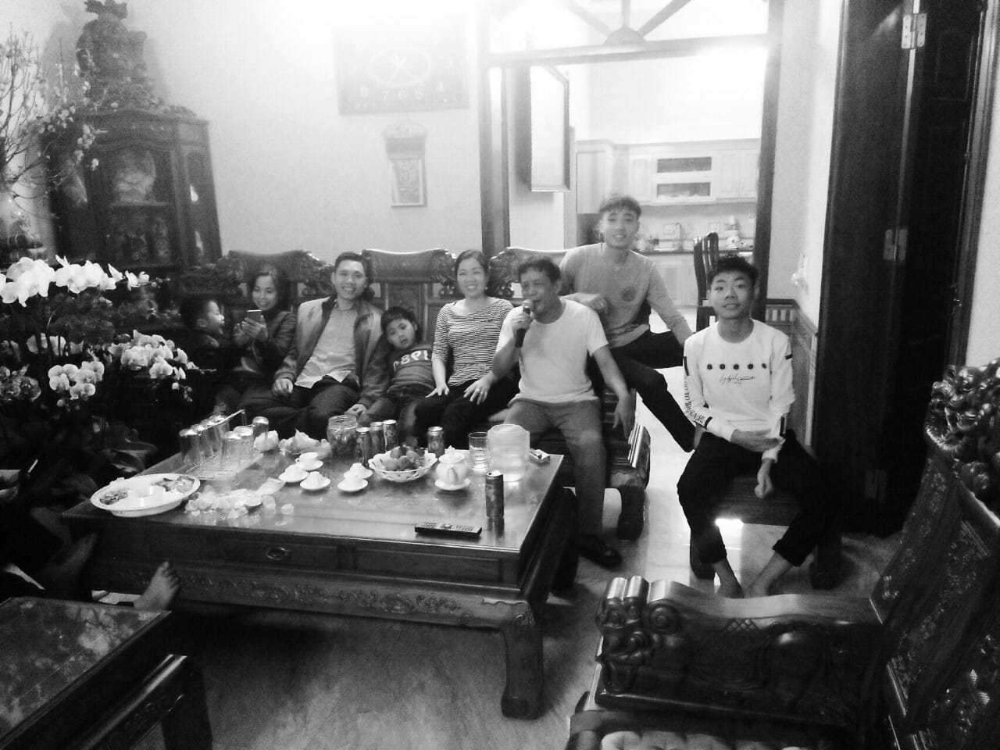

Sơ Yếu Lí Lịch

Đã làm việc với ngôn ngữ lập trình c/c++
Thiết kế mạch điện tử
Đã làm việc vơi autocad thiết kế mạch điện trong nhà
Làm việc với JAVA, HTML VÀ CSS
Sử dụng được Tiếng Anh và Tiếng Nhật giao tiếp cơ bản
Mong muốn tìm được 1 công việc trong môi trường chuyên nghiệp,năng động, nơi có thể vận dụng tốt các kiến thức và kĩ năng đã được rèn luyện như: Kỹ năng lập trình , kỹ năng thiết kế mạch điện, kỹ năng sử dụng thành thạo Autocad, Kỹ năng giao tiếp, làm việc nhóm, Kỹ năng sáng tạo và thích ứng với công việc có áp lực cao.